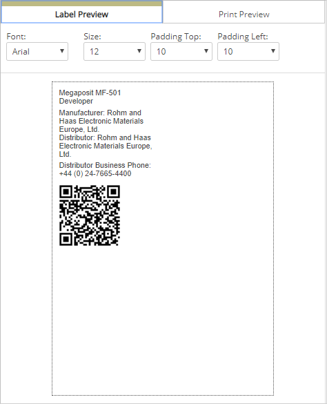
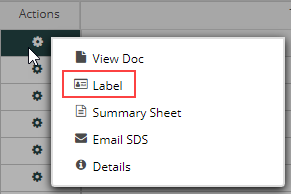
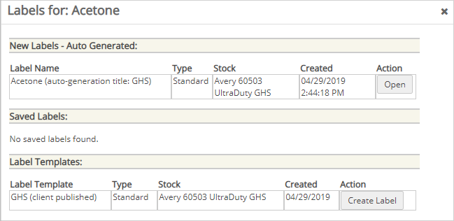
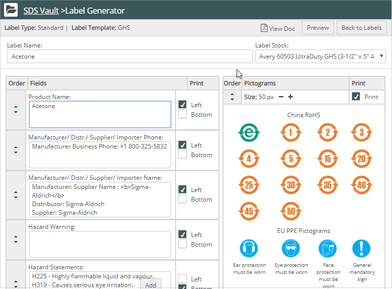
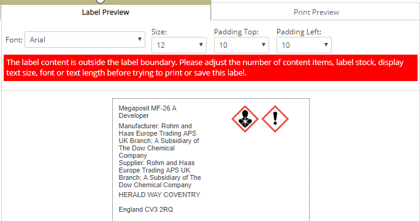
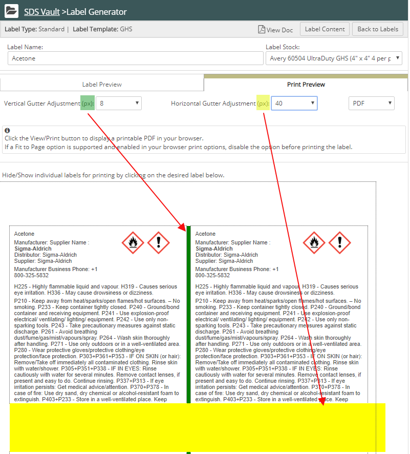

If your administrator has enabled this feature, you can create labels for your products.
Vault supports several label stocks. The label dimensions vary with each stock. The preview window displays the label based on the stock you choose, and warns you when your label content exceeds label boundaries.
With Avery labels, if you enable the HMIS table, NFPA diamond, and/or pictograms for printing, Vault divides the label area into a section to the left and a section below these graphics.
For Dymo labels, these areas are always divided because the HMIS table and NFPA diamond are pre-printed on Dymo label stock. There is also a blank Dymo label type which does not include the HMIS/NFPA tables.
For any label field, checking the Print Left or Print Bottom forces the field to appear in these two areas, respectively. Therefore, before creating a label, decide which fields will display to the left of any graphics you enable, and which fields will print below the graphics and extend under them.
The following illustration shows how Vault divides the label area with graphics enabled:

A label template must be created by an administrator in Label Management and a label saved for the product before a label can be printed by a General User.
To create a label:
In the search results grid, click the icon in the Action column for the document.
From the Action palette choose Label, then Create Label.

The Label window displays and lists any labels you already created and saved:

Choose Create New Label. The Label Generation window displays:
Note: Vault pre-fills label fields based on information provided when the product was added to Vault. If some information was not provided, the corresponding label fields may be empty.

Enter information in the text fields, and check Print Left or Print Bottom to position the text to the left or below the graphics
Order the text fields by clicking the up or down Order arrows for a field.
Note: Text fields can only be ordered within their respective print areas—the Print Left or Print Below areas. If you specify a field as Print Bottom, you cannot move the field into the Print Left area. First, specify the field as Print Left. Then reposition the field.
To print a Dymo label:
To correct boundary problems:
Vault warns you when your label content exceeds label boundaries. The following illustration shows the label preview displaying an error message about the boundary:

When this happens, simply reduce the number of printed fields until the preview error disappears.
To correct over-printing the label:
If you experience problems with the label content exceeding the print stock, you can adjust the vertical and horizontal gutters between labels. The next illustration shows the stock label preview and the gutter controls:
